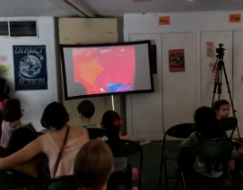
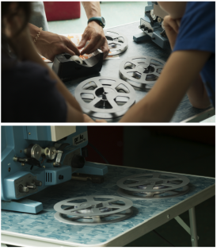

En juin 2024, lors de la « réouverture éclair » de la Clef suite à son rachat et avant les travaux prévus dans le cinéma, nous avons proposé une projection et un atelier pour les enfants du quartier.
Nous avons projeté des court-métrages expérimentaux, issus des fonds du Collectif Jeune Cinéma. Pendant l’atelier qui a suivi, les enfants ont collectivement dessiné sur de l’amorce vierge, photogramme par photogramme.
Nous avons projeté le film collectif créé sur un projecteur 16mm, aidées de leurs petites mains au chargement des bobines, et à leur plus grand émerveillement.